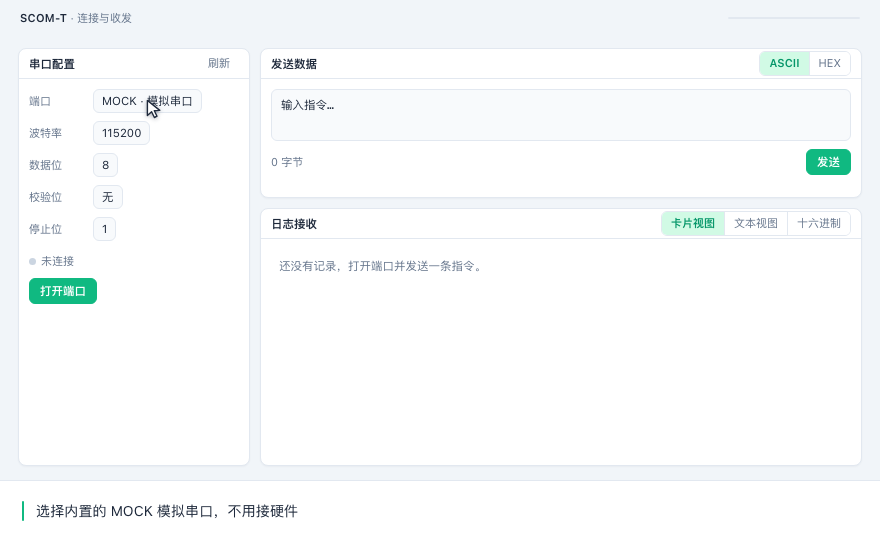
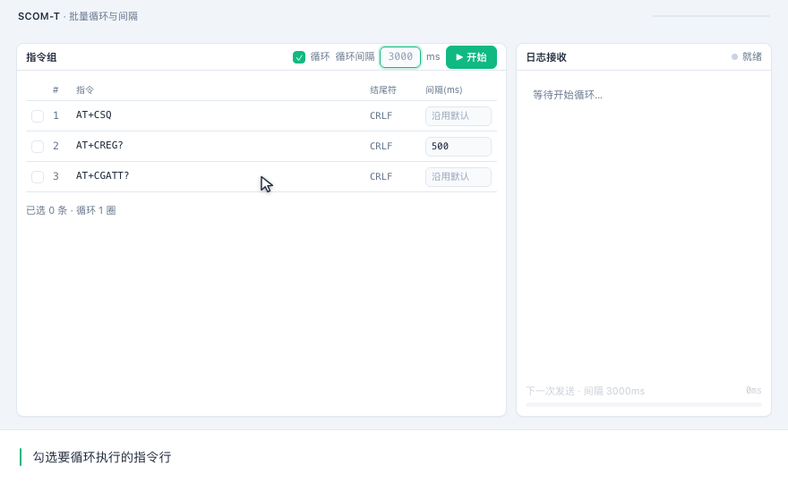
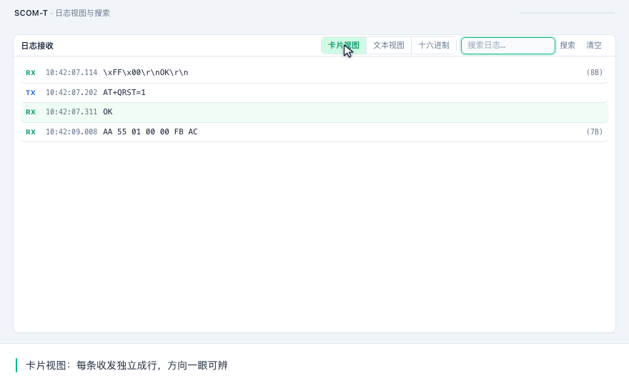
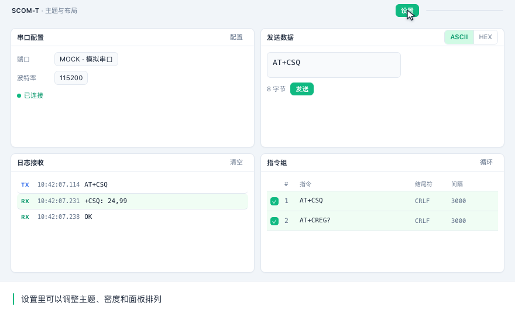

Byte-accurate
一个字节都不改写
不少工具先把收到的字节转成字符串再显示，多字节字符被拆开、0x00 被截断，
于是一串看得懂的文字背后，线上的数据早就不是原样了。
41A字母 A
54T字母 T
2B+加号
43C字母 C
53S字母 S
51Q字母 Q
0DCR回车
0ALF换行
结尾符按十六进制定义，发送面板、指令网格、热键共用同一份；0D 0A 或 0A 只是其中一种选择。
SCOM-T 的 HEX 视图以 rawBytes 为唯一真相：偏移列、ASCII 列、跨分片的字节拼接都在字节层完成，
不做任何隐式转码。切回文本时，非法字节也保留成可逆的 \xHH，不会变成一个方块问号。
Daily use
每天都会用到的四件事
- 十六进制无损显示
-
直接渲染 rawBytes，带偏移列与 ASCII 列。分片到达也不会把多字节字符拆坏，
二进制协议里的
00、0D都照原样显示。 - 批量指令与间隔
-
勾选多行循环执行。某行间隔留空，就沿用全局间隔（默认
3000ms，也接受2s这种写法）， 日志按节奏逐条出现；最后一圈发完，「停止」立刻变回「开始」，不会卡住。 - 模拟串口
- 内置 MOCK 端口，没有硬件也能跑通收发、循环和响应匹配。 先把指令集和正则校验清楚，再接上真机。
- 日志搜索与跟随
- 大小写、正则、全词三种模式，命中橙色高亮。手动画面上翻后出现「一键跟随」， 点一下回到最新一条，不用再滚回底部。
In action
实际操作
四段动图各 8 秒，按真实操作顺序重绘。看不到动图时，鼠标悬停或打开 README 里的文字步骤。




Get started
开始用
四个平台的安装包由同一条流水线产出。macOS 的包没有代码签名，首次打开需要右键选择「打开」。
下载安装包
# Windows 便携版、macOS dmg、Linux deb / AppImage
github.com/iFishin/SCOM-T/releases/latest
macOS 首次打开被拦下
# 提示「已损坏」时执行一次
xattr -dr com.apple.quarantine /Applications/SCOM-T.app
从源码构建
git clone https://github.com/iFishin/SCOM-T.git cd SCOM-T npm install npm run tauri:build
需要 Node.js 22+ 与 Rust 稳定版；Windows 还要装 Visual Studio C++ 生成工具。